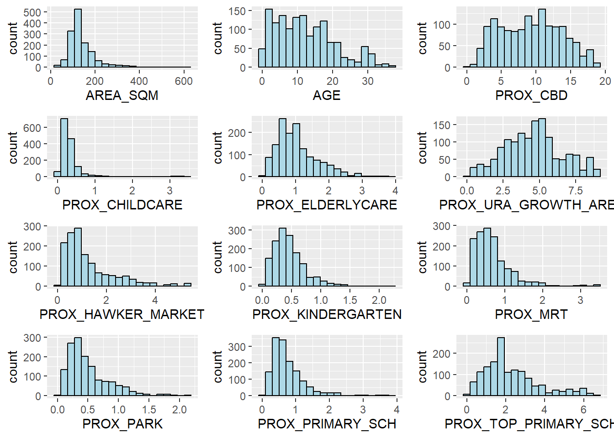
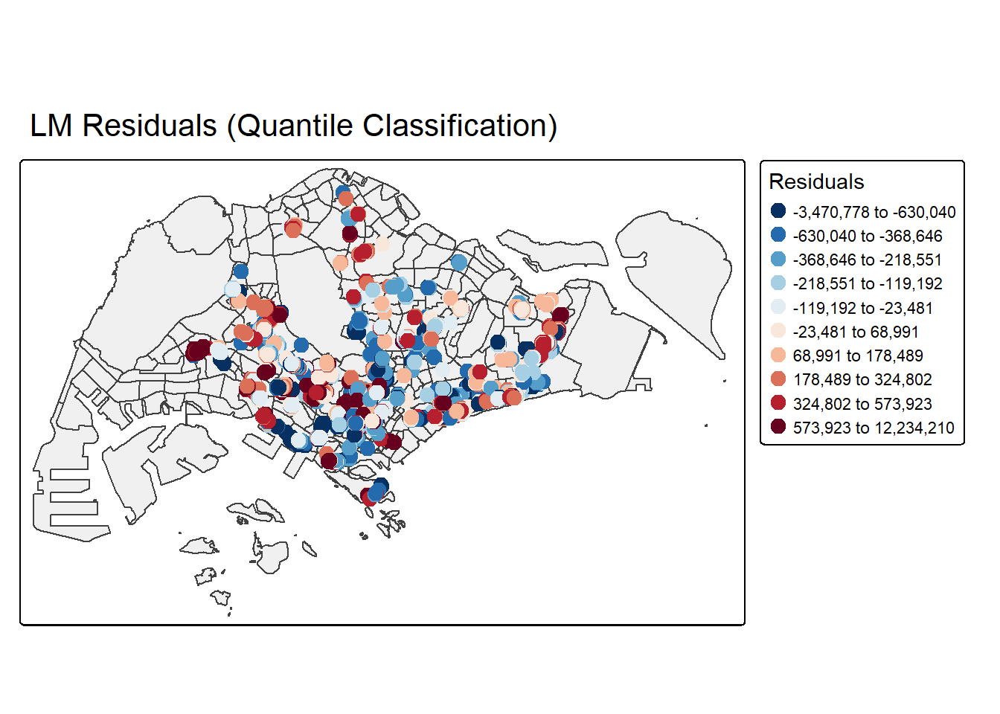
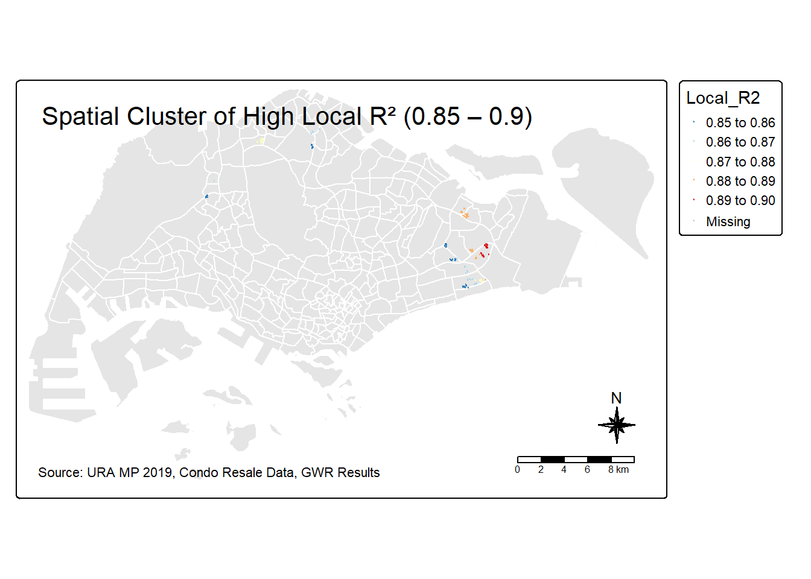
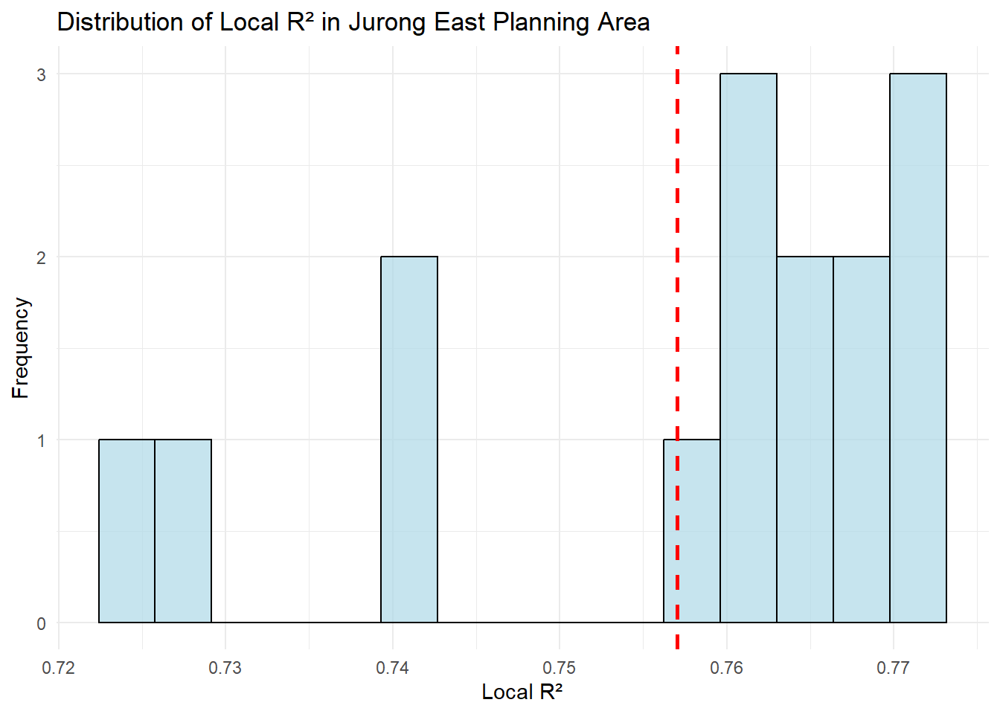
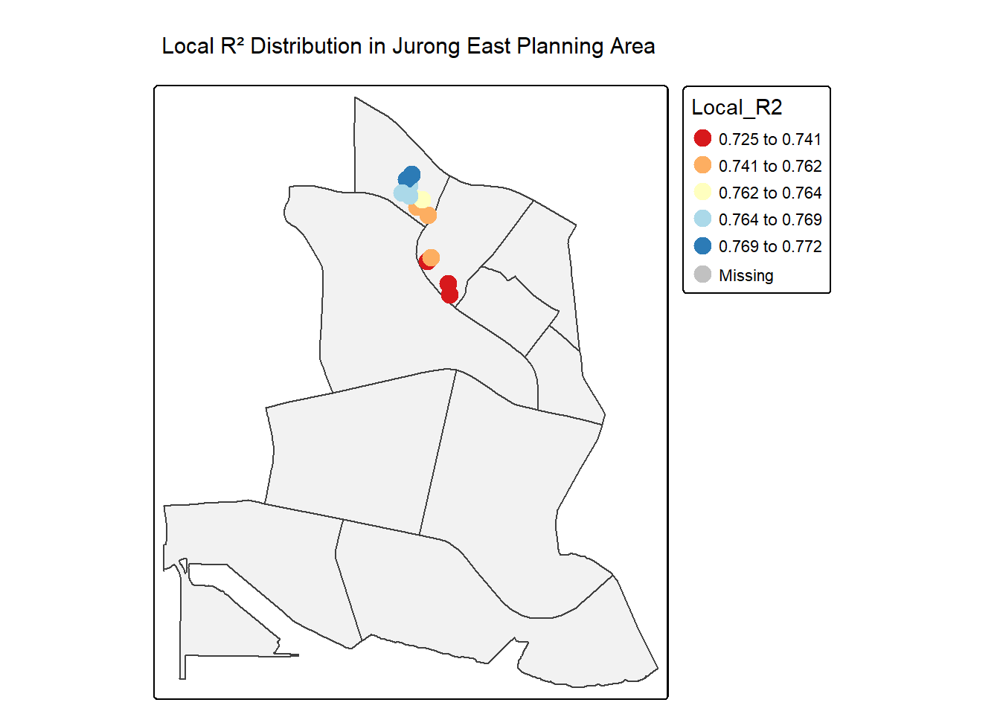

In class Exercise 7
Calibrating Hedonic Pricing Model for Private Highrise Property with GWR Method
1.Getting Started
2. Geospatial Data Wrangling
2.1 Importing geospatial data
Reading layer `MP14_SUBZONE_WEB_PL' from data source
`C:\Sathvika-7284\ISSS626-geo\Inclass_Ex\In_class_Ex7\data\geospatial'
using driver `ESRI Shapefile'
Simple feature collection with 323 features and 15 fields
Geometry type: MULTIPOLYGON
Dimension: XY
Bounding box: xmin: 2667.538 ymin: 15748.72 xmax: 56396.44 ymax: 50256.33
Projected CRS: SVY212.2 Updating CRS information
Coordinate Reference System:
User input: EPSG:3414
wkt:
PROJCRS["SVY21 / Singapore TM",
BASEGEOGCRS["SVY21",
DATUM["SVY21",
ELLIPSOID["WGS 84",6378137,298.257223563,
LENGTHUNIT["metre",1]]],
PRIMEM["Greenwich",0,
ANGLEUNIT["degree",0.0174532925199433]],
ID["EPSG",4757]],
CONVERSION["Singapore Transverse Mercator",
METHOD["Transverse Mercator",
ID["EPSG",9807]],
PARAMETER["Latitude of natural origin",1.36666666666667,
ANGLEUNIT["degree",0.0174532925199433],
ID["EPSG",8801]],
PARAMETER["Longitude of natural origin",103.833333333333,
ANGLEUNIT["degree",0.0174532925199433],
ID["EPSG",8802]],
PARAMETER["Scale factor at natural origin",1,
SCALEUNIT["unity",1],
ID["EPSG",8805]],
PARAMETER["False easting",28001.642,
LENGTHUNIT["metre",1],
ID["EPSG",8806]],
PARAMETER["False northing",38744.572,
LENGTHUNIT["metre",1],
ID["EPSG",8807]]],
CS[Cartesian,2],
AXIS["northing (N)",north,
ORDER[1],
LENGTHUNIT["metre",1]],
AXIS["easting (E)",east,
ORDER[2],
LENGTHUNIT["metre",1]],
USAGE[
SCOPE["Cadastre, engineering survey, topographic mapping."],
AREA["Singapore - onshore and offshore."],
BBOX[1.13,103.59,1.47,104.07]],
ID["EPSG",3414]]3. Aspatial Data Wrangling
3.1 Importing the aspatial data
Rows: 1,436
Columns: 23
$ LATITUDE <dbl> 1.287145, 1.328698, 1.313727, 1.308563, 1.321437,…
$ LONGITUDE <dbl> 103.7802, 103.8123, 103.7971, 103.8247, 103.9505,…
$ POSTCODE <dbl> 118635, 288420, 267833, 258380, 467169, 466472, 3…
$ SELLING_PRICE <dbl> 3000000, 3880000, 3325000, 4250000, 1400000, 1320…
$ AREA_SQM <dbl> 309, 290, 248, 127, 145, 139, 218, 141, 165, 168,…
$ AGE <dbl> 30, 32, 33, 7, 28, 22, 24, 24, 27, 31, 17, 22, 6,…
$ PROX_CBD <dbl> 7.941259, 6.609797, 6.898000, 4.038861, 11.783402…
$ PROX_CHILDCARE <dbl> 0.16597932, 0.28027246, 0.42922669, 0.39473543, 0…
$ PROX_ELDERLYCARE <dbl> 2.5198118, 1.9333338, 0.5021395, 1.9910316, 1.121…
$ PROX_URA_GROWTH_AREA <dbl> 6.618741, 7.505109, 6.463887, 4.906512, 6.410632,…
$ PROX_HAWKER_MARKET <dbl> 1.76542207, 0.54507614, 0.37789301, 1.68259969, 0…
$ PROX_KINDERGARTEN <dbl> 0.05835552, 0.61592412, 0.14120309, 0.38200076, 0…
$ PROX_MRT <dbl> 0.5607188, 0.6584461, 0.3053433, 0.6910183, 0.528…
$ PROX_PARK <dbl> 1.1710446, 0.1992269, 0.2779886, 0.9832843, 0.116…
$ PROX_PRIMARY_SCH <dbl> 1.6340256, 0.9747834, 1.4715016, 1.4546324, 0.709…
$ PROX_TOP_PRIMARY_SCH <dbl> 3.3273195, 0.9747834, 1.4715016, 2.3006394, 0.709…
$ PROX_SHOPPING_MALL <dbl> 2.2102717, 2.9374279, 1.2256850, 0.3525671, 1.307…
$ PROX_SUPERMARKET <dbl> 0.9103958, 0.5900617, 0.4135583, 0.4162219, 0.581…
$ PROX_BUS_STOP <dbl> 0.10336166, 0.28673408, 0.28504777, 0.29872340, 0…
$ NO_Of_UNITS <dbl> 18, 20, 27, 30, 30, 31, 32, 32, 32, 32, 34, 34, 3…
$ FAMILY_FRIENDLY <dbl> 0, 0, 0, 0, 0, 1, 1, 0, 1, 1, 0, 0, 0, 0, 0, 0, 0…
$ FREEHOLD <dbl> 1, 1, 1, 1, 1, 1, 1, 1, 1, 0, 1, 1, 1, 1, 1, 1, 1…
$ LEASEHOLD_99YR <dbl> 0, 0, 0, 0, 0, 0, 0, 0, 0, 0, 0, 0, 0, 0, 0, 0, 0… LATITUDE LONGITUDE POSTCODE SELLING_PRICE
Min. :1.240 Min. :103.7 Min. : 18965 Min. : 540000
1st Qu.:1.309 1st Qu.:103.8 1st Qu.:259849 1st Qu.: 1100000
Median :1.328 Median :103.8 Median :469298 Median : 1383222
Mean :1.334 Mean :103.8 Mean :440439 Mean : 1751211
3rd Qu.:1.357 3rd Qu.:103.9 3rd Qu.:589486 3rd Qu.: 1950000
Max. :1.454 Max. :104.0 Max. :828833 Max. :18000000
AREA_SQM AGE PROX_CBD PROX_CHILDCARE
Min. : 34.0 Min. : 0.00 Min. : 0.3869 Min. :0.004927
1st Qu.:103.0 1st Qu.: 5.00 1st Qu.: 5.5574 1st Qu.:0.174481
Median :121.0 Median :11.00 Median : 9.3567 Median :0.258135
Mean :136.5 Mean :12.14 Mean : 9.3254 Mean :0.326313
3rd Qu.:156.0 3rd Qu.:18.00 3rd Qu.:12.6661 3rd Qu.:0.368293
Max. :619.0 Max. :37.00 Max. :19.1804 Max. :3.465726
PROX_ELDERLYCARE PROX_URA_GROWTH_AREA PROX_HAWKER_MARKET PROX_KINDERGARTEN
Min. :0.05451 Min. :0.2145 Min. :0.05182 Min. :0.004927
1st Qu.:0.61254 1st Qu.:3.1643 1st Qu.:0.55245 1st Qu.:0.276345
Median :0.94179 Median :4.6186 Median :0.90842 Median :0.413385
Mean :1.05351 Mean :4.5981 Mean :1.27987 Mean :0.458903
3rd Qu.:1.35122 3rd Qu.:5.7550 3rd Qu.:1.68578 3rd Qu.:0.578474
Max. :3.94916 Max. :9.1554 Max. :5.37435 Max. :2.229045
PROX_MRT PROX_PARK PROX_PRIMARY_SCH PROX_TOP_PRIMARY_SCH
Min. :0.05278 Min. :0.02906 Min. :0.07711 Min. :0.07711
1st Qu.:0.34646 1st Qu.:0.26211 1st Qu.:0.44024 1st Qu.:1.34451
Median :0.57430 Median :0.39926 Median :0.63505 Median :1.88213
Mean :0.67316 Mean :0.49802 Mean :0.75471 Mean :2.27347
3rd Qu.:0.84844 3rd Qu.:0.65592 3rd Qu.:0.95104 3rd Qu.:2.90954
Max. :3.48037 Max. :2.16105 Max. :3.92899 Max. :6.74819
PROX_SHOPPING_MALL PROX_SUPERMARKET PROX_BUS_STOP NO_Of_UNITS
Min. :0.0000 Min. :0.0000 Min. :0.001595 Min. : 18.0
1st Qu.:0.5258 1st Qu.:0.3695 1st Qu.:0.098356 1st Qu.: 188.8
Median :0.9357 Median :0.5687 Median :0.151710 Median : 360.0
Mean :1.0455 Mean :0.6141 Mean :0.193974 Mean : 409.2
3rd Qu.:1.3994 3rd Qu.:0.7862 3rd Qu.:0.220466 3rd Qu.: 590.0
Max. :3.4774 Max. :2.2441 Max. :2.476639 Max. :1703.0
FAMILY_FRIENDLY FREEHOLD LEASEHOLD_99YR
Min. :0.0000 Min. :0.0000 Min. :0.0000
1st Qu.:0.0000 1st Qu.:0.0000 1st Qu.:0.0000
Median :0.0000 Median :0.0000 Median :0.0000
Mean :0.4868 Mean :0.4227 Mean :0.4882
3rd Qu.:1.0000 3rd Qu.:1.0000 3rd Qu.:1.0000
Max. :1.0000 Max. :1.0000 Max. :1.0000 3.2 Converting aspatial data frame into a sf object
Simple feature collection with 6 features and 21 fields
Geometry type: POINT
Dimension: XY
Bounding box: xmin: 22085.12 ymin: 29951.54 xmax: 41042.56 ymax: 34546.2
Projected CRS: SVY21 / Singapore TM
# A tibble: 6 × 22
POSTCODE SELLING_PRICE AREA_SQM AGE PROX_CBD PROX_CHILDCARE PROX_ELDERLYCARE
<dbl> <dbl> <dbl> <dbl> <dbl> <dbl> <dbl>
1 118635 3000000 309 30 7.94 0.166 2.52
2 288420 3880000 290 32 6.61 0.280 1.93
3 267833 3325000 248 33 6.90 0.429 0.502
4 258380 4250000 127 7 4.04 0.395 1.99
5 467169 1400000 145 28 11.8 0.119 1.12
6 466472 1320000 139 22 10.3 0.125 0.789
# ℹ 15 more variables: PROX_URA_GROWTH_AREA <dbl>, PROX_HAWKER_MARKET <dbl>,
# PROX_KINDERGARTEN <dbl>, PROX_MRT <dbl>, PROX_PARK <dbl>,
# PROX_PRIMARY_SCH <dbl>, PROX_TOP_PRIMARY_SCH <dbl>,
# PROX_SHOPPING_MALL <dbl>, PROX_SUPERMARKET <dbl>, PROX_BUS_STOP <dbl>,
# NO_Of_UNITS <dbl>, FAMILY_FRIENDLY <dbl>, FREEHOLD <dbl>,
# LEASEHOLD_99YR <dbl>, geometry <POINT [m]>4. Exploratory Data Analysis (EDA)
4.1 EDA using statistical graphics
4.2 Multiple Histogram Plots distribution of variables
AREA_SQM <- ggplot(data=condo_resale.sf,
aes(x= `AREA_SQM`)) +
geom_histogram(bins=20,
color="black",
fill="light blue")
AGE <- ggplot(data=condo_resale.sf,
aes(x= `AGE`)) +
geom_histogram(bins=20,
color="black",
fill="light blue")
PROX_CBD <- ggplot(data=condo_resale.sf,
aes(x= `PROX_CBD`)) +
geom_histogram(bins=20,
color="black",
fill="light blue")
PROX_CHILDCARE <- ggplot(data=condo_resale.sf,
aes(x= `PROX_CHILDCARE`)) +
geom_histogram(bins=20,
color="black",
fill="light blue")
PROX_ELDERLYCARE <- ggplot(data=condo_resale.sf,
aes(x= `PROX_ELDERLYCARE`)) +
geom_histogram(bins=20,
color="black",
fill="light blue")
PROX_URA_GROWTH_AREA <- ggplot(data=condo_resale.sf,
aes(x= `PROX_URA_GROWTH_AREA`)) +
geom_histogram(bins=20,
color="black",
fill="light blue")
PROX_HAWKER_MARKET <- ggplot(data=condo_resale.sf,
aes(x= `PROX_HAWKER_MARKET`)) +
geom_histogram(bins=20,
color="black",
fill="light blue")
PROX_KINDERGARTEN <- ggplot(data=condo_resale.sf,
aes(x= `PROX_KINDERGARTEN`)) +
geom_histogram(bins=20,
color="black",
fill="light blue")
PROX_MRT <- ggplot(data=condo_resale.sf,
aes(x= `PROX_MRT`)) +
geom_histogram(bins=20,
color="black",
fill="light blue")
PROX_PARK <- ggplot(data=condo_resale.sf,
aes(x= `PROX_PARK`)) +
geom_histogram(bins=20,
color="black",
fill="light blue")
PROX_PRIMARY_SCH <- ggplot(data=condo_resale.sf,
aes(x= `PROX_PRIMARY_SCH`)) +
geom_histogram(bins=20,
color="black",
fill="light blue")
PROX_TOP_PRIMARY_SCH <- ggplot(data=condo_resale.sf,
aes(x= `PROX_TOP_PRIMARY_SCH`)) +
geom_histogram(bins=20,
color="black",
fill="light blue")
ggarrange(AREA_SQM, AGE, PROX_CBD, PROX_CHILDCARE,
PROX_ELDERLYCARE, PROX_URA_GROWTH_AREA,
PROX_HAWKER_MARKET, PROX_KINDERGARTEN, PROX_MRT,
PROX_PARK, PROX_PRIMARY_SCH, PROX_TOP_PRIMARY_SCH,
ncol = 3, nrow = 4)
4.3 Drawing Statistical Point Map
5. Hedonic Pricing Modelling in R
5.1 Simple Linear Regression Method
Call:
lm(formula = SELLING_PRICE ~ AREA_SQM, data = condo_resale.sf)
Residuals:
Min 1Q Median 3Q Max
-3695815 -391764 -87517 258900 13503875
Coefficients:
Estimate Std. Error t value Pr(>|t|)
(Intercept) -258121.1 63517.2 -4.064 5.09e-05 ***
AREA_SQM 14719.0 428.1 34.381 < 2e-16 ***
---
Signif. codes: 0 '***' 0.001 '**' 0.01 '*' 0.05 '.' 0.1 ' ' 1
Residual standard error: 942700 on 1434 degrees of freedom
Multiple R-squared: 0.4518, Adjusted R-squared: 0.4515
F-statistic: 1182 on 1 and 1434 DF, p-value: < 2.2e-16
5.2 Multiple Linear Regression Method
5.2.1 Visualising the relationships of the independent variables

5.3 Building a hedonic pricing model using multiple linear regression method
condo.mlr <- lm(
formula = SELLING_PRICE ~ AREA_SQM + AGE +
PROX_CBD + PROX_CHILDCARE + PROX_ELDERLYCARE +
PROX_URA_GROWTH_AREA + PROX_HAWKER_MARKET +
PROX_KINDERGARTEN + PROX_MRT + PROX_PARK +
PROX_PRIMARY_SCH + PROX_TOP_PRIMARY_SCH +
PROX_SHOPPING_MALL + PROX_SUPERMARKET +
PROX_BUS_STOP + NO_Of_UNITS +
FAMILY_FRIENDLY + FREEHOLD,
data=condo_resale.sf)
summary(condo.mlr)
Call:
lm(formula = SELLING_PRICE ~ AREA_SQM + AGE + PROX_CBD + PROX_CHILDCARE +
PROX_ELDERLYCARE + PROX_URA_GROWTH_AREA + PROX_HAWKER_MARKET +
PROX_KINDERGARTEN + PROX_MRT + PROX_PARK + PROX_PRIMARY_SCH +
PROX_TOP_PRIMARY_SCH + PROX_SHOPPING_MALL + PROX_SUPERMARKET +
PROX_BUS_STOP + NO_Of_UNITS + FAMILY_FRIENDLY + FREEHOLD,
data = condo_resale.sf)
Residuals:
Min 1Q Median 3Q Max
-3475964 -293923 -23069 241043 12260381
Coefficients:
Estimate Std. Error t value Pr(>|t|)
(Intercept) 481728.40 121441.01 3.967 7.65e-05 ***
AREA_SQM 12708.32 369.59 34.385 < 2e-16 ***
AGE -24440.82 2763.16 -8.845 < 2e-16 ***
PROX_CBD -78669.78 6768.97 -11.622 < 2e-16 ***
PROX_CHILDCARE -351617.91 109467.25 -3.212 0.00135 **
PROX_ELDERLYCARE 171029.42 42110.51 4.061 5.14e-05 ***
PROX_URA_GROWTH_AREA 38474.53 12523.57 3.072 0.00217 **
PROX_HAWKER_MARKET 23746.10 29299.76 0.810 0.41782
PROX_KINDERGARTEN 147468.99 82668.87 1.784 0.07466 .
PROX_MRT -314599.68 57947.44 -5.429 6.66e-08 ***
PROX_PARK 563280.50 66551.68 8.464 < 2e-16 ***
PROX_PRIMARY_SCH 180186.08 65237.95 2.762 0.00582 **
PROX_TOP_PRIMARY_SCH 2280.04 20410.43 0.112 0.91107
PROX_SHOPPING_MALL -206604.06 42840.60 -4.823 1.57e-06 ***
PROX_SUPERMARKET -44991.80 77082.64 -0.584 0.55953
PROX_BUS_STOP 683121.35 138353.28 4.938 8.85e-07 ***
NO_Of_UNITS -231.18 89.03 -2.597 0.00951 **
FAMILY_FRIENDLY 140340.77 47020.55 2.985 0.00289 **
FREEHOLD 359913.01 49220.22 7.312 4.38e-13 ***
---
Signif. codes: 0 '***' 0.001 '**' 0.01 '*' 0.05 '.' 0.1 ' ' 1
Residual standard error: 755800 on 1417 degrees of freedom
Multiple R-squared: 0.6518, Adjusted R-squared: 0.6474
F-statistic: 147.4 on 18 and 1417 DF, p-value: < 2.2e-165.4 Revising the model
condo.mlr1 <- lm(
formula = SELLING_PRICE ~ AREA_SQM + AGE +
PROX_CBD + PROX_CHILDCARE + PROX_MRT +
PROX_ELDERLYCARE + PROX_URA_GROWTH_AREA +
PROX_PARK + PROX_PRIMARY_SCH +
PROX_SHOPPING_MALL + PROX_BUS_STOP +
NO_Of_UNITS + FAMILY_FRIENDLY + FREEHOLD,
data=condo_resale.sf)
summary(condo.mlr1)
Call:
lm(formula = SELLING_PRICE ~ AREA_SQM + AGE + PROX_CBD + PROX_CHILDCARE +
PROX_MRT + PROX_ELDERLYCARE + PROX_URA_GROWTH_AREA + PROX_PARK +
PROX_PRIMARY_SCH + PROX_SHOPPING_MALL + PROX_BUS_STOP + NO_Of_UNITS +
FAMILY_FRIENDLY + FREEHOLD, data = condo_resale.sf)
Residuals:
Min 1Q Median 3Q Max
-3470778 -298119 -23481 248917 12234210
Coefficients:
Estimate Std. Error t value Pr(>|t|)
(Intercept) 527633.22 108183.22 4.877 1.20e-06 ***
AREA_SQM 12777.52 367.48 34.771 < 2e-16 ***
AGE -24687.74 2754.84 -8.962 < 2e-16 ***
PROX_CBD -77131.32 5763.12 -13.384 < 2e-16 ***
PROX_CHILDCARE -318472.75 107959.51 -2.950 0.003231 **
PROX_MRT -294745.11 56916.37 -5.179 2.56e-07 ***
PROX_ELDERLYCARE 185575.62 39901.86 4.651 3.61e-06 ***
PROX_URA_GROWTH_AREA 39163.25 11754.83 3.332 0.000885 ***
PROX_PARK 570504.81 65507.03 8.709 < 2e-16 ***
PROX_PRIMARY_SCH 159856.14 60234.60 2.654 0.008046 **
PROX_SHOPPING_MALL -220947.25 36561.83 -6.043 1.93e-09 ***
PROX_BUS_STOP 682482.22 134513.24 5.074 4.42e-07 ***
NO_Of_UNITS -245.48 87.95 -2.791 0.005321 **
FAMILY_FRIENDLY 146307.58 46893.02 3.120 0.001845 **
FREEHOLD 350599.81 48506.48 7.228 7.98e-13 ***
---
Signif. codes: 0 '***' 0.001 '**' 0.01 '*' 0.05 '.' 0.1 ' ' 1
Residual standard error: 756000 on 1421 degrees of freedom
Multiple R-squared: 0.6507, Adjusted R-squared: 0.6472
F-statistic: 189.1 on 14 and 1421 DF, p-value: < 2.2e-165.5 Preparing Publication Quality Table: gtsummary method
| Characteristic | Beta | 95% CI1 | p-value |
|---|---|---|---|
| (Intercept) | 527,633 | 315,417, 739,849 | <0.001 |
| AREA_SQM | 12,778 | 12,057, 13,498 | <0.001 |
| AGE | -24,688 | -30,092, -19,284 | <0.001 |
| PROX_CBD | -77,131 | -88,436, -65,826 | <0.001 |
| PROX_CHILDCARE | -318,473 | -530,250, -106,696 | 0.003 |
| PROX_MRT | -294,745 | -406,394, -183,096 | <0.001 |
| PROX_ELDERLYCARE | 185,576 | 107,303, 263,849 | <0.001 |
| PROX_URA_GROWTH_AREA | 39,163 | 16,105, 62,222 | <0.001 |
| PROX_PARK | 570,505 | 442,004, 699,006 | <0.001 |
| PROX_PRIMARY_SCH | 159,856 | 41,698, 278,014 | 0.008 |
| PROX_SHOPPING_MALL | -220,947 | -292,668, -149,226 | <0.001 |
| PROX_BUS_STOP | 682,482 | 418,616, 946,348 | <0.001 |
| NO_Of_UNITS | -245 | -418, -73 | 0.005 |
| FAMILY_FRIENDLY | 146,308 | 54,321, 238,295 | 0.002 |
| FREEHOLD | 350,600 | 255,448, 445,752 | <0.001 |
| 1 CI = Confidence Interval | |||
tbl_regression(condo.mlr1,
intercept = TRUE) %>%
add_glance_source_note(
label = list(sigma ~ "\U03C3"),
include = c(r.squared, adj.r.squared,
AIC, statistic,
p.value, sigma))| Characteristic | Beta | 95% CI1 | p-value |
|---|---|---|---|
| (Intercept) | 527,633 | 315,417, 739,849 | <0.001 |
| AREA_SQM | 12,778 | 12,057, 13,498 | <0.001 |
| AGE | -24,688 | -30,092, -19,284 | <0.001 |
| PROX_CBD | -77,131 | -88,436, -65,826 | <0.001 |
| PROX_CHILDCARE | -318,473 | -530,250, -106,696 | 0.003 |
| PROX_MRT | -294,745 | -406,394, -183,096 | <0.001 |
| PROX_ELDERLYCARE | 185,576 | 107,303, 263,849 | <0.001 |
| PROX_URA_GROWTH_AREA | 39,163 | 16,105, 62,222 | <0.001 |
| PROX_PARK | 570,505 | 442,004, 699,006 | <0.001 |
| PROX_PRIMARY_SCH | 159,856 | 41,698, 278,014 | 0.008 |
| PROX_SHOPPING_MALL | -220,947 | -292,668, -149,226 | <0.001 |
| PROX_BUS_STOP | 682,482 | 418,616, 946,348 | <0.001 |
| NO_Of_UNITS | -245 | -418, -73 | 0.005 |
| FAMILY_FRIENDLY | 146,308 | 54,321, 238,295 | 0.002 |
| FREEHOLD | 350,600 | 255,448, 445,752 | <0.001 |
| R² = 0.651; Adjusted R² = 0.647; AIC = 42,967; Statistic = 189; p-value = <0.001; σ = 755,957 | |||
| 1 CI = Confidence Interval | |||
5.6 Regression Diagnostics
5.6.1 Multicollinearity test
# Check for Multicollinearity
Low Correlation
Term VIF VIF 95% CI Increased SE Tolerance Tolerance 95% CI
AREA_SQM 1.15 [1.09, 1.23] 1.07 0.87 [0.81, 0.92]
AGE 1.41 [1.33, 1.52] 1.19 0.71 [0.66, 0.75]
PROX_CBD 1.57 [1.47, 1.69] 1.25 0.64 [0.59, 0.68]
PROX_CHILDCARE 3.26 [3.00, 3.56] 1.81 0.31 [0.28, 0.33]
PROX_MRT 1.91 [1.78, 2.07] 1.38 0.52 [0.48, 0.56]
PROX_ELDERLYCARE 1.52 [1.42, 1.63] 1.23 0.66 [0.61, 0.70]
PROX_URA_GROWTH_AREA 1.33 [1.26, 1.43] 1.15 0.75 [0.70, 0.80]
PROX_PARK 1.21 [1.15, 1.29] 1.10 0.83 [0.77, 0.87]
PROX_PRIMARY_SCH 2.21 [2.05, 2.40] 1.49 0.45 [0.42, 0.49]
PROX_SHOPPING_MALL 1.48 [1.39, 1.60] 1.22 0.67 [0.63, 0.72]
PROX_BUS_STOP 2.85 [2.62, 3.10] 1.69 0.35 [0.32, 0.38]
NO_Of_UNITS 1.45 [1.36, 1.56] 1.20 0.69 [0.64, 0.73]
FAMILY_FRIENDLY 1.38 [1.30, 1.48] 1.17 0.72 [0.67, 0.77]
FREEHOLD 1.44 [1.36, 1.55] 1.20 0.69 [0.65, 0.74]5.6.2 Test for Non-Linearity
5.6.3 Test for Normality Assumption
5.6.4 Testing for Spatial Autocorrelation
tm_shape(mpsz_svy21) +
tm_polygons(fill_alpha = 0.4) +
tm_shape(condo_resale.sf) +
tm_dots(
fill = "MLR_RES",
size = 0.7,
col = "black",
fill.scale = tm_scale(
n = 10,
values = rev(
brewer.pal(11, "RdBu")),
style = "quantile",
midpoint = NA),
fill.legend = tm_legend(title = "Residuals")
) +
tm_title("LM Residuals (Quantile Classification)") +
tm_layout(legend.outside = TRUE) +
tm_view(set_zoom_limits = c(11,14))
set.seed(1234)
global_moran_perm(
condo_resale.sf$MLR_RES,
nb = condo_resale.sf$nb,
wt = condo_resale.sf$wt,
alternative = "two.sided",
nsim = 499)
Monte-Carlo simulation of Moran I
data: x
weights: listw
number of simulations + 1: 500
statistic = 0.14389, observed rank = 500, p-value < 2.2e-16
alternative hypothesis: two.sided6. Building Hedonic Pricing Models using GWmodel
6.1 Building Fixed Bandwidth GWR Model
6.1.1 Computing fixed bandwith
bw.fixed <- bw.gwr(
formula = SELLING_PRICE ~ AREA_SQM + AGE +
PROX_CBD + PROX_CHILDCARE + PROX_ELDERLYCARE +
PROX_URA_GROWTH_AREA + PROX_MRT + PROX_PARK +
PROX_PRIMARY_SCH + PROX_SHOPPING_MALL +
PROX_BUS_STOP + NO_Of_UNITS + FAMILY_FRIENDLY +
FREEHOLD,
data=condo_resale.sf,
approach="CV",
kernel="gaussian",
adaptive=FALSE,
longlat=FALSE)Fixed bandwidth: 17660.96 CV score: 8.259118e+14
Fixed bandwidth: 10917.26 CV score: 7.970454e+14
Fixed bandwidth: 6749.419 CV score: 7.273273e+14
Fixed bandwidth: 4173.553 CV score: 6.300006e+14
Fixed bandwidth: 2581.58 CV score: 5.404958e+14
Fixed bandwidth: 1597.687 CV score: 4.857515e+14
Fixed bandwidth: 989.6077 CV score: 4.722431e+14
Fixed bandwidth: 613.7939 CV score: 1.377823e+16
Fixed bandwidth: 1221.873 CV score: 4.778717e+14
Fixed bandwidth: 846.0596 CV score: 4.791629e+14
Fixed bandwidth: 1078.325 CV score: 4.751406e+14
Fixed bandwidth: 934.7772 CV score: 4.72518e+14
Fixed bandwidth: 1023.495 CV score: 4.730305e+14
Fixed bandwidth: 968.6643 CV score: 4.721317e+14
Fixed bandwidth: 955.7206 CV score: 4.722072e+14
Fixed bandwidth: 976.6639 CV score: 4.721387e+14
Fixed bandwidth: 963.7202 CV score: 4.721484e+14
Fixed bandwidth: 971.7199 CV score: 4.721293e+14
Fixed bandwidth: 973.6083 CV score: 4.721309e+14
Fixed bandwidth: 970.5527 CV score: 4.721295e+14
Fixed bandwidth: 972.4412 CV score: 4.721296e+14
Fixed bandwidth: 971.2741 CV score: 4.721292e+14
Fixed bandwidth: 970.9985 CV score: 4.721293e+14
Fixed bandwidth: 971.4443 CV score: 4.721292e+14
Fixed bandwidth: 971.5496 CV score: 4.721293e+14
Fixed bandwidth: 971.3793 CV score: 4.721292e+14
Fixed bandwidth: 971.3391 CV score: 4.721292e+14
Fixed bandwidth: 971.3143 CV score: 4.721292e+14
Fixed bandwidth: 971.3545 CV score: 4.721292e+14
Fixed bandwidth: 971.3296 CV score: 4.721292e+14
Fixed bandwidth: 971.345 CV score: 4.721292e+14
Fixed bandwidth: 971.3355 CV score: 4.721292e+14
Fixed bandwidth: 971.3413 CV score: 4.721292e+14
Fixed bandwidth: 971.3377 CV score: 4.721292e+14
Fixed bandwidth: 971.34 CV score: 4.721292e+14
Fixed bandwidth: 971.3405 CV score: 4.721292e+14
Fixed bandwidth: 971.3408 CV score: 4.721292e+14
Fixed bandwidth: 971.3403 CV score: 4.721292e+14
Fixed bandwidth: 971.3406 CV score: 4.721292e+14
Fixed bandwidth: 971.3404 CV score: 4.721292e+14
Fixed bandwidth: 971.3405 CV score: 4.721292e+14
Fixed bandwidth: 971.3405 CV score: 4.721292e+14 bw.fixed <- bw.gwr(
formula = SELLING_PRICE ~ AREA_SQM + AGE +
PROX_CBD + PROX_CHILDCARE + PROX_ELDERLYCARE +
PROX_URA_GROWTH_AREA + PROX_MRT + PROX_PARK +
PROX_PRIMARY_SCH + PROX_SHOPPING_MALL +
PROX_BUS_STOP + NO_Of_UNITS + FAMILY_FRIENDLY +
FREEHOLD,
data=condo_resale.sf,
approach="AIC",
kernel="gaussian",
adaptive=FALSE,
longlat=FALSE)Fixed bandwidth: 17660.96 AICc value: 42937.77
Fixed bandwidth: 10917.26 AICc value: 42886.26
Fixed bandwidth: 6749.419 AICc value: 42757.54
Fixed bandwidth: 4173.553 AICc value: 42565.01
Fixed bandwidth: 2581.58 AICc value: 42368.05
Fixed bandwidth: 1597.687 AICc value: 42256.42
Fixed bandwidth: 989.6077 AICc value: 42262.3
Fixed bandwidth: 1973.501 AICc value: 42279.95
Fixed bandwidth: 1365.421 AICc value: 42254.72
Fixed bandwidth: 1221.873 AICc value: 42255.41
Fixed bandwidth: 1454.139 AICc value: 42254.82
Fixed bandwidth: 1310.591 AICc value: 42254.84
Fixed bandwidth: 1399.309 AICc value: 42254.71
Fixed bandwidth: 1420.252 AICc value: 42254.73
Fixed bandwidth: 1386.365 AICc value: 42254.7
Fixed bandwidth: 1378.365 AICc value: 42254.71
Fixed bandwidth: 1391.309 AICc value: 42254.7 bw.fixed <- bw.gwr(
formula = SELLING_PRICE ~ AREA_SQM + AGE +
PROX_CBD + PROX_CHILDCARE + PROX_ELDERLYCARE +
PROX_URA_GROWTH_AREA + PROX_MRT + PROX_PARK +
PROX_PRIMARY_SCH + PROX_SHOPPING_MALL +
PROX_BUS_STOP + NO_Of_UNITS + FAMILY_FRIENDLY +
FREEHOLD,
data=condo_resale.sf,
approach="BIC",
kernel="gaussian",
adaptive=FALSE,
longlat=FALSE)Fixed bandwidth: 17660.96 BIC value: 41593.33
Fixed bandwidth: 10917.26 BIC value: 41566.56
Fixed bandwidth: 6749.419 BIC value: 41500.35
Fixed bandwidth: 4173.553 BIC value: 41445.41
Fixed bandwidth: 2581.58 BIC value: 41505.47
Fixed bandwidth: 5157.446 BIC value: 41459.8
Fixed bandwidth: 3565.473 BIC value: 41449.85
Fixed bandwidth: 4549.367 BIC value: 41448.63
Fixed bandwidth: 3941.287 BIC value: 41445.46
Fixed bandwidth: 4317.101 BIC value: 41446.21
Fixed bandwidth: 4084.835 BIC value: 41445.22
Fixed bandwidth: 4030.005 BIC value: 41445.22
Fixed bandwidth: 4118.722 BIC value: 41445.26
Fixed bandwidth: 4063.892 BIC value: 41445.21
Fixed bandwidth: 4050.948 BIC value: 41445.21
Fixed bandwidth: 4071.891 BIC value: 41445.21
Fixed bandwidth: 4058.948 BIC value: 41445.21
Fixed bandwidth: 4066.947 BIC value: 41445.21
Fixed bandwidth: 4062.003 BIC value: 41445.21 6.1.2 GWModel method - fixed bandwith
gwr.fixed <- gwr.basic(
formula = SELLING_PRICE ~ AREA_SQM + AGE +
PROX_CBD + PROX_CHILDCARE + PROX_ELDERLYCARE +
PROX_URA_GROWTH_AREA + PROX_MRT + PROX_PARK +
PROX_PRIMARY_SCH + PROX_SHOPPING_MALL +
PROX_BUS_STOP + NO_Of_UNITS + FAMILY_FRIENDLY +
FREEHOLD,
data=condo_resale.sf,
bw=bw.fixed,
kernel = 'gaussian',
longlat = FALSE) ***********************************************************************
* Package GWmodel *
***********************************************************************
Program starts at: 2025-10-18 17:14:29.844247
Call:
gwr.basic(formula = SELLING_PRICE ~ AREA_SQM + AGE + PROX_CBD +
PROX_CHILDCARE + PROX_ELDERLYCARE + PROX_URA_GROWTH_AREA +
PROX_MRT + PROX_PARK + PROX_PRIMARY_SCH + PROX_SHOPPING_MALL +
PROX_BUS_STOP + NO_Of_UNITS + FAMILY_FRIENDLY + FREEHOLD,
data = condo_resale.sf, bw = bw.fixed, kernel = "gaussian",
longlat = FALSE)
Dependent (y) variable: SELLING_PRICE
Independent variables: AREA_SQM AGE PROX_CBD PROX_CHILDCARE PROX_ELDERLYCARE PROX_URA_GROWTH_AREA PROX_MRT PROX_PARK PROX_PRIMARY_SCH PROX_SHOPPING_MALL PROX_BUS_STOP NO_Of_UNITS FAMILY_FRIENDLY FREEHOLD
Number of data points: 1436
***********************************************************************
* Results of Global Regression *
***********************************************************************
Call:
lm(formula = formula, data = data)
Residuals:
Min 1Q Median 3Q Max
-3470778 -298119 -23481 248917 12234210
Coefficients:
Estimate Std. Error t value Pr(>|t|)
(Intercept) 527633.22 108183.22 4.877 1.20e-06 ***
AREA_SQM 12777.52 367.48 34.771 < 2e-16 ***
AGE -24687.74 2754.84 -8.962 < 2e-16 ***
PROX_CBD -77131.32 5763.12 -13.384 < 2e-16 ***
PROX_CHILDCARE -318472.75 107959.51 -2.950 0.003231 **
PROX_ELDERLYCARE 185575.62 39901.86 4.651 3.61e-06 ***
PROX_URA_GROWTH_AREA 39163.25 11754.83 3.332 0.000885 ***
PROX_MRT -294745.11 56916.37 -5.179 2.56e-07 ***
PROX_PARK 570504.81 65507.03 8.709 < 2e-16 ***
PROX_PRIMARY_SCH 159856.14 60234.60 2.654 0.008046 **
PROX_SHOPPING_MALL -220947.25 36561.83 -6.043 1.93e-09 ***
PROX_BUS_STOP 682482.22 134513.24 5.074 4.42e-07 ***
NO_Of_UNITS -245.48 87.95 -2.791 0.005321 **
FAMILY_FRIENDLY 146307.58 46893.02 3.120 0.001845 **
FREEHOLD 350599.81 48506.48 7.228 7.98e-13 ***
---Significance stars
Signif. codes: 0 '***' 0.001 '**' 0.01 '*' 0.05 '.' 0.1 ' ' 1
Residual standard error: 756000 on 1421 degrees of freedom
Multiple R-squared: 0.6507
Adjusted R-squared: 0.6472
F-statistic: 189.1 on 14 and 1421 DF, p-value: < 2.2e-16
***Extra Diagnostic information
Residual sum of squares: 8.120609e+14
Sigma(hat): 752522.9
AIC: 42966.76
AICc: 42967.14
BIC: 41731.39
***********************************************************************
* Results of Geographically Weighted Regression *
***********************************************************************
*********************Model calibration information*********************
Kernel function: gaussian
Fixed bandwidth: 4062.003
Regression points: the same locations as observations are used.
Distance metric: Euclidean distance metric is used.
****************Summary of GWR coefficient estimates:******************
Min. 1st Qu. Median 3rd Qu.
Intercept -53177.018 281529.345 880015.720 1370819.342
AREA_SQM 4782.896 7711.152 12015.329 15634.498
AGE -45640.381 -37497.344 -23025.827 -12442.350
PROX_CBD -131232.506 -105150.303 -91465.675 -72185.483
PROX_CHILDCARE -918543.637 -497289.624 -91262.832 25164.643
PROX_ELDERLYCARE -105874.439 75882.790 197613.698 287555.979
PROX_URA_GROWTH_AREA -58433.315 -14446.323 22865.285 66854.992
PROX_MRT -818742.856 -527888.506 -370736.000 -194231.914
PROX_PARK -147538.508 159980.396 493820.240 768741.542
PROX_PRIMARY_SCH -194486.524 -38433.509 176372.551 324480.299
PROX_SHOPPING_MALL -524492.230 -268138.078 -145438.042 -43047.002
PROX_BUS_STOP 39694.313 354428.154 784663.633 1079425.882
NO_Of_UNITS -638.405 -510.445 -259.764 -47.244
FAMILY_FRIENDLY -62978.435 69588.845 154439.412 303570.142
FREEHOLD 42267.156 202338.112 295430.145 406652.963
Max.
Intercept 1805833.71
AREA_SQM 16573.26
AGE -4653.84
PROX_CBD -35186.70
PROX_CHILDCARE 236120.38
PROX_ELDERLYCARE 377837.54
PROX_URA_GROWTH_AREA 105132.33
PROX_MRT -40558.75
PROX_PARK 884432.31
PROX_PRIMARY_SCH 541493.93
PROX_SHOPPING_MALL 139775.01
PROX_BUS_STOP 1366060.08
NO_Of_UNITS 151.23
FAMILY_FRIENDLY 411016.58
FREEHOLD 544941.24
************************Diagnostic information*************************
Number of data points: 1436
Effective number of parameters (2trace(S) - trace(S'S)): 82.88972
Effective degrees of freedom (n-2trace(S) + trace(S'S)): 1353.11
AICc (GWR book, Fotheringham, et al. 2002, p. 61, eq 2.33): 42553.96
AIC (GWR book, Fotheringham, et al. 2002,GWR p. 96, eq. 4.22): 42482.11
BIC (GWR book, Fotheringham, et al. 2002,GWR p. 61, eq. 2.34): 41445.21
Residual sum of squares: 5.668132e+14
R-square value: 0.7561723
Adjusted R-square value: 0.7412247
***********************************************************************
Program stops at: 2025-10-18 17:14:31.79288 6.2 Building Adaptive Bandwidth GWR Model
6.2.1 Computing the adaptive bandwidth
bw.adaptive <- bw.gwr(
formula = SELLING_PRICE ~ AREA_SQM + AGE +
PROX_CBD + PROX_CHILDCARE + PROX_ELDERLYCARE +
PROX_URA_GROWTH_AREA + PROX_MRT + PROX_PARK +
PROX_PRIMARY_SCH + PROX_SHOPPING_MALL +
PROX_BUS_STOP + NO_Of_UNITS +
FAMILY_FRIENDLY + FREEHOLD,
data=condo_resale.sf,
approach="CV",
kernel="gaussian",
adaptive=TRUE,
longlat=FALSE)Adaptive bandwidth: 895 CV score: 7.952401e+14
Adaptive bandwidth: 561 CV score: 7.667364e+14
Adaptive bandwidth: 354 CV score: 6.953454e+14
Adaptive bandwidth: 226 CV score: 6.15223e+14
Adaptive bandwidth: 147 CV score: 5.674373e+14
Adaptive bandwidth: 98 CV score: 5.426745e+14
Adaptive bandwidth: 68 CV score: 5.168117e+14
Adaptive bandwidth: 49 CV score: 4.859631e+14
Adaptive bandwidth: 37 CV score: 4.646518e+14
Adaptive bandwidth: 30 CV score: 4.422088e+14
Adaptive bandwidth: 25 CV score: 4.430816e+14
Adaptive bandwidth: 32 CV score: 4.505602e+14
Adaptive bandwidth: 27 CV score: 4.462172e+14
Adaptive bandwidth: 30 CV score: 4.422088e+14 bw.adaptive <- bw.gwr(
formula = SELLING_PRICE ~ AREA_SQM + AGE +
PROX_CBD + PROX_CHILDCARE + PROX_ELDERLYCARE +
PROX_URA_GROWTH_AREA + PROX_MRT + PROX_PARK +
PROX_PRIMARY_SCH + PROX_SHOPPING_MALL +
PROX_BUS_STOP + NO_Of_UNITS +
FAMILY_FRIENDLY + FREEHOLD,
data=condo_resale.sf,
approach="AIC",
kernel="gaussian",
adaptive=TRUE,
longlat=FALSE)Adaptive bandwidth (number of nearest neighbours): 895 AICc value: 42879.45
Adaptive bandwidth (number of nearest neighbours): 561 AICc value: 42823.52
Adaptive bandwidth (number of nearest neighbours): 354 AICc value: 42677.14
Adaptive bandwidth (number of nearest neighbours): 226 AICc value: 42484.37
Adaptive bandwidth (number of nearest neighbours): 147 AICc value: 42353.27
Adaptive bandwidth (number of nearest neighbours): 98 AICc value: 42280.68
Adaptive bandwidth (number of nearest neighbours): 68 AICc value: 42201.18
Adaptive bandwidth (number of nearest neighbours): 49 AICc value: 42100.66
Adaptive bandwidth (number of nearest neighbours): 37 AICc value: 42055.68
Adaptive bandwidth (number of nearest neighbours): 30 AICc value: 41982.22
Adaptive bandwidth (number of nearest neighbours): 25 AICc value: 42003.33
Adaptive bandwidth (number of nearest neighbours): 32 AICc value: 42035.41
Adaptive bandwidth (number of nearest neighbours): 27 AICc value: 41978.63
Adaptive bandwidth (number of nearest neighbours): 27 AICc value: 41978.63 bw.adaptive <- bw.gwr(
formula = SELLING_PRICE ~ AREA_SQM + AGE +
PROX_CBD + PROX_CHILDCARE + PROX_ELDERLYCARE +
PROX_URA_GROWTH_AREA + PROX_MRT + PROX_PARK +
PROX_PRIMARY_SCH + PROX_SHOPPING_MALL +
PROX_BUS_STOP + NO_Of_UNITS +
FAMILY_FRIENDLY + FREEHOLD,
data=condo_resale.sf,
approach="BIC",
kernel="gaussian",
adaptive=TRUE,
longlat=FALSE)Adaptive bandwidth (number of nearest neighbours): 895 BIC value: 41549.42
Adaptive bandwidth (number of nearest neighbours): 561 BIC value: 41522.62
Adaptive bandwidth (number of nearest neighbours): 354 BIC value: 41426.52
Adaptive bandwidth (number of nearest neighbours): 226 BIC value: 41306.39
Adaptive bandwidth (number of nearest neighbours): 147 BIC value: 41278.47
Adaptive bandwidth (number of nearest neighbours): 98 BIC value: 41355.99
Adaptive bandwidth (number of nearest neighbours): 177 BIC value: 41282.21
Adaptive bandwidth (number of nearest neighbours): 128 BIC value: 41294.4
Adaptive bandwidth (number of nearest neighbours): 158 BIC value: 41280.62
Adaptive bandwidth (number of nearest neighbours): 139 BIC value: 41280.71
Adaptive bandwidth (number of nearest neighbours): 151 BIC value: 41280.81
Adaptive bandwidth (number of nearest neighbours): 143 BIC value: 41283.33
Adaptive bandwidth (number of nearest neighbours): 147 BIC value: 41278.47 6.2.2 Constructing the adaptive bandwidth gwr model
gwr.adaptive <- gwr.basic(
formula = SELLING_PRICE ~ AREA_SQM + AGE +
PROX_CBD + PROX_CHILDCARE + PROX_ELDERLYCARE +
PROX_URA_GROWTH_AREA + PROX_MRT + PROX_PARK +
PROX_PRIMARY_SCH + PROX_SHOPPING_MALL + PROX_BUS_STOP +
NO_Of_UNITS + FAMILY_FRIENDLY + FREEHOLD,
data=condo_resale.sf,
bw=bw.adaptive,
kernel = 'gaussian',
adaptive=TRUE,
longlat = FALSE) ***********************************************************************
* Package GWmodel *
***********************************************************************
Program starts at: 2025-10-18 17:15:22.383254
Call:
gwr.basic(formula = SELLING_PRICE ~ AREA_SQM + AGE + PROX_CBD +
PROX_CHILDCARE + PROX_ELDERLYCARE + PROX_URA_GROWTH_AREA +
PROX_MRT + PROX_PARK + PROX_PRIMARY_SCH + PROX_SHOPPING_MALL +
PROX_BUS_STOP + NO_Of_UNITS + FAMILY_FRIENDLY + FREEHOLD,
data = condo_resale.sf, bw = bw.adaptive, kernel = "gaussian",
adaptive = TRUE, longlat = FALSE)
Dependent (y) variable: SELLING_PRICE
Independent variables: AREA_SQM AGE PROX_CBD PROX_CHILDCARE PROX_ELDERLYCARE PROX_URA_GROWTH_AREA PROX_MRT PROX_PARK PROX_PRIMARY_SCH PROX_SHOPPING_MALL PROX_BUS_STOP NO_Of_UNITS FAMILY_FRIENDLY FREEHOLD
Number of data points: 1436
***********************************************************************
* Results of Global Regression *
***********************************************************************
Call:
lm(formula = formula, data = data)
Residuals:
Min 1Q Median 3Q Max
-3470778 -298119 -23481 248917 12234210
Coefficients:
Estimate Std. Error t value Pr(>|t|)
(Intercept) 527633.22 108183.22 4.877 1.20e-06 ***
AREA_SQM 12777.52 367.48 34.771 < 2e-16 ***
AGE -24687.74 2754.84 -8.962 < 2e-16 ***
PROX_CBD -77131.32 5763.12 -13.384 < 2e-16 ***
PROX_CHILDCARE -318472.75 107959.51 -2.950 0.003231 **
PROX_ELDERLYCARE 185575.62 39901.86 4.651 3.61e-06 ***
PROX_URA_GROWTH_AREA 39163.25 11754.83 3.332 0.000885 ***
PROX_MRT -294745.11 56916.37 -5.179 2.56e-07 ***
PROX_PARK 570504.81 65507.03 8.709 < 2e-16 ***
PROX_PRIMARY_SCH 159856.14 60234.60 2.654 0.008046 **
PROX_SHOPPING_MALL -220947.25 36561.83 -6.043 1.93e-09 ***
PROX_BUS_STOP 682482.22 134513.24 5.074 4.42e-07 ***
NO_Of_UNITS -245.48 87.95 -2.791 0.005321 **
FAMILY_FRIENDLY 146307.58 46893.02 3.120 0.001845 **
FREEHOLD 350599.81 48506.48 7.228 7.98e-13 ***
---Significance stars
Signif. codes: 0 '***' 0.001 '**' 0.01 '*' 0.05 '.' 0.1 ' ' 1
Residual standard error: 756000 on 1421 degrees of freedom
Multiple R-squared: 0.6507
Adjusted R-squared: 0.6472
F-statistic: 189.1 on 14 and 1421 DF, p-value: < 2.2e-16
***Extra Diagnostic information
Residual sum of squares: 8.120609e+14
Sigma(hat): 752522.9
AIC: 42966.76
AICc: 42967.14
BIC: 41731.39
***********************************************************************
* Results of Geographically Weighted Regression *
***********************************************************************
*********************Model calibration information*********************
Kernel function: gaussian
Adaptive bandwidth: 147 (number of nearest neighbours)
Regression points: the same locations as observations are used.
Distance metric: Euclidean distance metric is used.
****************Summary of GWR coefficient estimates:******************
Min. 1st Qu. Median 3rd Qu.
Intercept -9.0930e+05 2.9000e+05 7.4952e+05 1.4368e+06
AREA_SQM 4.8484e+03 7.9316e+03 1.2043e+04 1.5604e+04
AGE -6.9805e+04 -3.9558e+04 -2.3204e+04 -1.0307e+04
PROX_CBD -2.5012e+05 -1.1125e+05 -9.1179e+04 -7.5267e+04
PROX_CHILDCARE -1.0638e+06 -3.1424e+05 -1.6611e+04 9.9726e+04
PROX_ELDERLYCARE -1.0512e+05 1.1387e+05 1.7661e+05 2.8105e+05
PROX_URA_GROWTH_AREA -1.3688e+05 -1.6629e+04 3.1436e+04 7.1311e+04
PROX_MRT -1.6188e+06 -6.2991e+05 -3.5663e+05 -2.7298e+05
PROX_PARK -2.4102e+05 9.4328e+03 4.5910e+05 7.1345e+05
PROX_PRIMARY_SCH -1.9279e+05 2.8732e+04 1.4874e+05 3.3334e+05
PROX_SHOPPING_MALL -4.8662e+05 -2.5510e+05 -1.3863e+05 -1.2313e+04
PROX_BUS_STOP -3.7614e+04 2.8960e+05 7.2455e+05 1.1552e+06
NO_Of_UNITS -8.6929e+02 -4.6827e+02 -2.4796e+02 -7.1072e+01
FAMILY_FRIENDLY -1.1400e+04 6.3580e+04 1.2901e+05 3.0417e+05
FREEHOLD 5.5328e+04 2.0819e+05 3.0825e+05 4.0026e+05
Max.
Intercept 2559437.32
AREA_SQM 17753.77
AGE -4583.59
PROX_CBD -24210.29
PROX_CHILDCARE 491634.42
PROX_ELDERLYCARE 408110.11
PROX_URA_GROWTH_AREA 282678.32
PROX_MRT -42428.11
PROX_PARK 869914.38
PROX_PRIMARY_SCH 1628158.01
PROX_SHOPPING_MALL 132979.30
PROX_BUS_STOP 3262113.43
NO_Of_UNITS 268.59
FAMILY_FRIENDLY 976625.77
FREEHOLD 830532.49
************************Diagnostic information*************************
Number of data points: 1436
Effective number of parameters (2trace(S) - trace(S'S)): 92.47833
Effective degrees of freedom (n-2trace(S) + trace(S'S)): 1343.522
AICc (GWR book, Fotheringham, et al. 2002, p. 61, eq 2.33): 42353.27
AIC (GWR book, Fotheringham, et al. 2002,GWR p. 96, eq. 4.22): 42273.34
BIC (GWR book, Fotheringham, et al. 2002,GWR p. 61, eq. 2.34): 41278.47
Residual sum of squares: 4.878365e+14
R-square value: 0.790146
Adjusted R-square value: 0.7756904
***********************************************************************
Program stops at: 2025-10-18 17:15:24.157756 - Fixed bandwidth (4062 m) assumes spatial processes vary uniformly — good for evenly spaced data, but may over-smooth dense urban areas.
- Adaptive bandwidth (147 nearest neighbours) adjusts the window size depending on data density — smaller in dense areas, larger in sparse ones.
- Both AIC and BIC results point to adaptive GWR (147 NN) as the best-performing and most realistic model for spatially heterogeneous housing data.
Between fixed and adaptive bandwidth approaches, the adaptive GWR model using 147 nearest neighbours (BIC-selected) performed best. It achieved the lowest BIC (41278.47), higher R², and smaller residuals, indicating that local spatial variations in housing prices are better captured when the bandwidth adapts to data density. Therefore, the adaptive (BIC-based) approach represents the correct and optimal nearest-neighbour configuration for this pricing model.
6.3 Converting SDF into sf data.frame
Rows: 1,436
Columns: 52
$ Intercept <dbl> 882486.7, 290126.6, 762198.0, -324250.4, 14305…
$ AREA_SQM <dbl> 14191.900, 16520.276, 15351.762, 17448.807, 60…
$ AGE <dbl> -26635.424, -46734.827, -37492.117, -68060.842…
$ PROX_CBD <dbl> -83598.91, -79953.53, -100097.21, -59865.84, -…
$ PROX_CHILDCARE <dbl> -149160.2200, -24807.3116, 298809.4758, 296018…
$ PROX_ELDERLYCARE <dbl> 106476.23, 314537.95, 266428.22, 325458.48, 13…
$ PROX_URA_GROWTH_AREA <dbl> -35528.459, -65086.870, -106494.148, -41795.52…
$ PROX_MRT <dbl> -356634.61, -804282.70, -639312.85, -1497751.4…
$ PROX_PARK <dbl> 578680.22, 810906.05, 660302.23, 613782.83, -1…
$ PROX_PRIMARY_SCH <dbl> 205590.319, 584054.935, 454049.928, 1183859.95…
$ PROX_SHOPPING_MALL <dbl> -230134.792, -142567.378, -142656.086, -332052…
$ PROX_BUS_STOP <dbl> 886508.0, 1313545.2, 1374644.7, 2760175.8, 289…
$ NO_Of_UNITS <dbl> -545.41020, -591.15844, -671.30595, -676.49262…
$ FAMILY_FRIENDLY <dbl> 239435.13, 458560.30, 450543.57, 839633.52, 52…
$ FREEHOLD <dbl> 330841.66, 371572.01, 353790.24, 704445.59, 22…
$ y <dbl> 3000000, 3880000, 3325000, 4250000, 1400000, 1…
$ yhat <dbl> 4530852.6, 3688595.9, 3424534.4, 4415548.7, 14…
$ residual <dbl> -1530852.55, 191404.07, -99534.41, -165548.74,…
$ CV_Score <dbl> 0, 0, 0, 0, 0, 0, 0, 0, 0, 0, 0, 0, 0, 0, 0, 0…
$ Stud_residual <dbl> -2.73696354, 0.33009145, -0.17492358, -0.28549…
$ Intercept_SE <dbl> 153159.7, 141182.3, 169637.3, 170343.2, 246354…
$ AREA_SQM_SE <dbl> 410.2435, 426.4684, 434.1756, 492.0255, 680.34…
$ AGE_SE <dbl> 3376.742, 3432.861, 3556.053, 4611.327, 5340.5…
$ PROX_CBD_SE <dbl> 8850.299, 9557.984, 10988.952, 16693.223, 3318…
$ PROX_CHILDCARE_SE <dbl> 143065.5, 154669.8, 174407.4, 208856.5, 289010…
$ PROX_ELDERLYCARE_SE <dbl> 55210.90, 53738.31, 57257.64, 71930.62, 103953…
$ PROX_URA_GROWTH_AREA_SE <dbl> 24456.83, 20320.78, 28721.74, 35000.51, 46549.…
$ PROX_MRT_SE <dbl> 86685.95, 87813.34, 99123.30, 153791.23, 11386…
$ PROX_PARK_SE <dbl> 86917.94, 94712.09, 103293.89, 118405.57, 1630…
$ PROX_PRIMARY_SCH_SE <dbl> 74070.89, 73926.43, 80033.07, 104437.67, 14983…
$ PROX_SHOPPING_MALL_SE <dbl> 53543.34, 48335.82, 57728.08, 75382.46, 83412.…
$ PROX_BUS_STOP_SE <dbl> 175118.3, 219682.9, 233035.8, 303479.1, 397614…
$ NO_Of_UNITS_SE <dbl> 115.0315, 120.5914, 134.6531, 154.6652, 159.35…
$ FAMILY_FRIENDLY_SE <dbl> 63749.63, 63330.87, 68943.15, 84243.61, 89889.…
$ FREEHOLD_SE <dbl> 60488.78, 58495.20, 64687.76, 85117.81, 106640…
$ Intercept_TV <dbl> 5.761872, 2.054979, 4.493104, -1.903512, 5.806…
$ AREA_SQM_TV <dbl> 34.593844, 38.737398, 35.358420, 35.463216, 8.…
$ AGE_TV <dbl> -7.887907, -13.613957, -10.543182, -14.759492,…
$ PROX_CBD_TV <dbl> -9.445885, -8.365104, -9.108895, -3.586236, -3…
$ PROX_CHILDCARE_TV <dbl> -1.0426006580, -0.1603888336, 1.7132839681, 1.…
$ PROX_ELDERLYCARE_TV <dbl> 1.9285363, 5.8531418, 4.6531475, 4.5246167, 1.…
$ PROX_URA_GROWTH_AREA_TV <dbl> -1.45270116, -3.20297185, -3.70778827, -1.1941…
$ PROX_MRT_TV <dbl> -4.1140992, -9.1590040, -6.4496729, -9.7388614…
$ PROX_PARK_TV <dbl> 6.6577765, 8.5618012, 6.3924618, 5.1837329, -1…
$ PROX_PRIMARY_SCH_TV <dbl> 2.77558853, 7.90048937, 5.67327875, 11.3355649…
$ PROX_SHOPPING_MALL_TV <dbl> -4.29810305, -2.94951807, -2.47117312, -4.4049…
$ PROX_BUS_STOP_TV <dbl> 5.0623369, 5.9792784, 5.8988574, 9.0951095, 0.…
$ NO_Of_UNITS_TV <dbl> -4.7413979, -4.9021611, -4.9854476, -4.3739168…
$ FAMILY_FRIENDLY_TV <dbl> 3.7558672, 7.2407072, 6.5350009, 9.9667328, 0.…
$ FREEHOLD_TV <dbl> 5.4694716, 6.3521793, 5.4691990, 8.2761244, 2.…
$ Local_R2 <dbl> 0.6165668, 0.7738609, 0.7457216, 0.8053114, 0.…
$ geometry <POINT [m]> POINT (22085.12 29951.54), POINT (25656.…6.4 Visualising local R2
6.5 Thematic Mapping
# Filtering dataset for only Local R² values between 0.85 and 0.9
condo_resale_filtered <- condo_resale.sf.adaptive %>%
filter(Local_R2 >= 0.85 & Local_R2 <= 0.9)
# Switching to static map mode
tmap_mode("plot")
# Plotting
tm_shape(mpsz_svy21) +
tm_polygons(fill = "gray90", border.col = "white") +
tm_shape(condo_resale_filtered) +
tm_dots(col = "Local_R2",
size = 0.08,
border.col = "gray50",
border.lwd = 0.5,
palette = "-RdYlBu",
title = "Local R² (0.85 – 0.9)") +
tm_compass(type = "8star", size = 2) +
tm_scale_bar() +
tm_credits("Source: URA MP 2019, Condo Resale Data, GWR Results",
position = c("left", "bottom")) +
tm_layout(title = "Spatial Cluster of High Local R² (0.85 – 0.9)",
legend.outside = TRUE,
frame = TRUE,
bg.color = "white")
Analyzing R² Distribution in Jurong East Planning Area
# Extracting Jurong East Data
# Extract Jurong East planning area boundary
JurongEast_boundary <- mpsz_svy21 %>%
filter(PLN_AREA_N == "JURONG EAST")
# Filter GWR results for Jurong East area
JurongEast_gwr <- condo_resale.sf.adaptive %>%
st_join(JurongEast_boundary) %>%
filter(!is.na(PLN_AREA_N))
# Checking the number of observations in Jurong East
nrow(JurongEast_gwr)[1] 15# Summary Statistics of R² in Jurong East
# Summary of Local R² in Jurong East
JurongEast_r2_summary <- summary(JurongEast_gwr$Local_R2)
JurongEast_r2_summary Min. 1st Qu. Median Mean 3rd Qu. Max.
0.7247 0.7486 0.7624 0.7570 0.7679 0.7720 # Additional statistics
JurongEast_r2_stats <- JurongEast_gwr %>%
st_drop_geometry() %>%
summarise(
n = n(),
mean_r2 = mean(Local_R2),
median_r2 = median(Local_R2),
sd_r2 = sd(Local_R2),
min_r2 = min(Local_R2),
max_r2 = max(Local_R2),
q1_r2 = quantile(Local_R2, 0.25),
q3_r2 = quantile(Local_R2, 0.75)
)
JurongEast_r2_stats n mean_r2 median_r2 sd_r2 min_r2 max_r2 q1_r2 q3_r2
1 15 0.7570286 0.7624288 0.01566552 0.7246578 0.7720285 0.7486432 0.7678689# Visualizing R² Distribution in Jurong East
# Histogram of Local R² in Jurong East
ggplot(JurongEast_gwr, aes(x = Local_R2)) +
geom_histogram(bins = 15, fill = "lightblue", color = "black", alpha = 0.7) +
geom_vline(aes(xintercept = mean(Local_R2)), color = "red", linetype = "dashed", size = 1) +
labs(title = "Distribution of Local R² in Jurong East Planning Area",
x = "Local R²",
y = "Frequency") +
theme_minimal()
# Spatial Distribution of R² in Jurong East
# Map of Local R² in Jurong East
tm_shape(JurongEast_boundary) +
tm_polygons(alpha = 0.3, col = "lightgray") +
tm_shape(JurongEast_gwr) +
tm_dots(col = "Local_R2",
palette = "RdYlBu",
style = "quantile",
size = 0.8,
title = "Local R²") +
tm_layout(main.title = "Local R² Distribution in Jurong East Planning Area",
legend.outside = TRUE)
# Comparison with Overall R² Distribution
# Compare Jurong East with overall distribution
overall_r2_stats <- condo_resale.sf.adaptive %>%
st_drop_geometry() %>%
summarise(
n = n(),
mean_r2 = mean(Local_R2),
median_r2 = median(Local_R2),
sd_r2 = sd(Local_R2)
)
comparison <- data.frame(
Area = c("Jurong East", "Overall"),
Mean_R2 = c(JurongEast_r2_stats$mean_r2, overall_r2_stats$mean_r2),
Median_R2 = c(JurongEast_r2_stats$median_r2, overall_r2_stats$median_r2),
SD_R2 = c(JurongEast_r2_stats$sd_r2, overall_r2_stats$sd_r2)
)
comparison Area Mean_R2 Median_R2 SD_R2
1 Jurong East 0.7570286 0.7624288 0.01566552
2 Overall 0.7801275 0.7796238 0.07250616